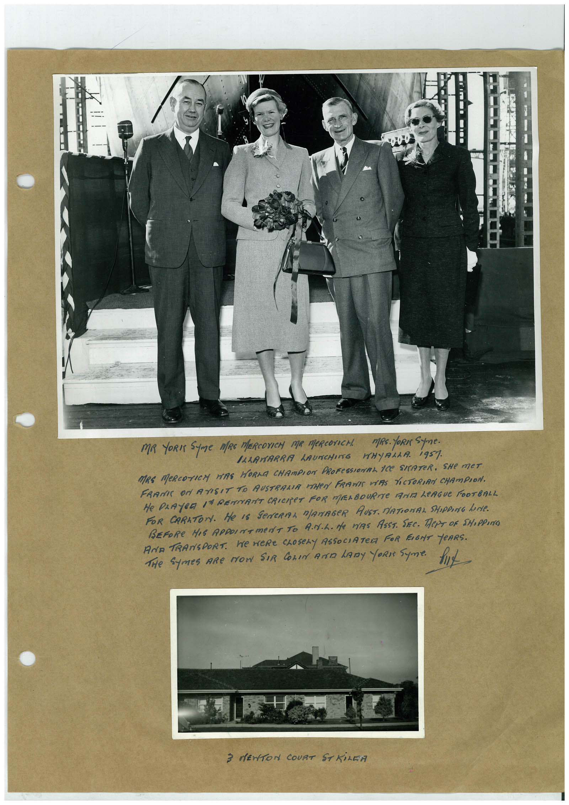

Book 1 · scan 056


Description
Transcription
Context
Review notes
Compare the machine draft with the scan. Handwriting and names need human review.
Artifacts
Edit the artifacts field in this note’s frontmatter to change these records. This summary is generated.
B01-S056-A01 — Photo & Handwritten note — Book 1, scan 056
Types: Photo, Handwritten note
Scope: Whole scanned page; individual items can be split out during review.
Caption: Not mapped yet.
Caption source: Not recorded yet.
Caption status: unmapped
Machine transcription
MR YORI SUme MRS MERCOXICH MR MeRCOTICH. MRs. YORN Spne. ILLAWARRA LAUNCHING WHYALLA. 1957 MRE MeRCOTICH HERE HORMA CHAMPION PROFESSIOMAL ICE SITATER. SHe MET FRAME ON ATISIT TO AUSTRALIA VEHRA FRANIE VAS PICTORIAN CHAMPION. He PLAYER IN RENANT CRICET FOR MELBOURNe ANT LeAGUe FOOTBALL FOR CARATON. He IS GeNERAL MANAGeR AUST. MATIONAL SHIPPING LeNie. BEFORE HIS REPOINTMeNT TO ANIL. He MYRS ASST. SEE. TePT OF SHOPPING AND TRANSPORT. We WeRE CLOSeLY ASSOCIATeR FOR EIGHT YeARS. THe Symes ARe MOW SIR COLIN AND LADy ORI SUme. 3 MENTON COURT ST KILEA